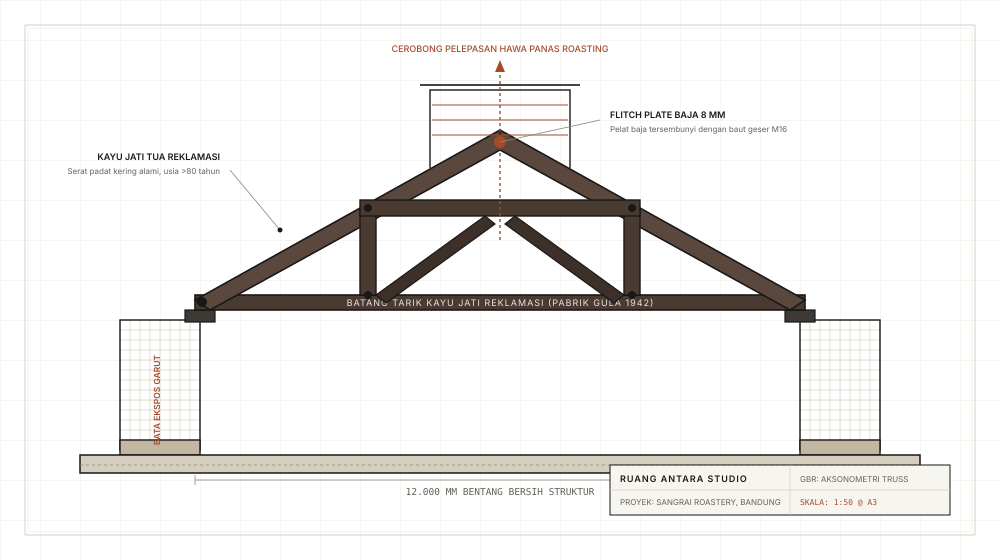

Sangrai Roastery & Ruang Cicip Kopi
“Rangka atap kayu jati berusia delapan puluh tahun yang diselamatkan dari pabrik gula di Jawa Timur, diberi kehidupan kedua di atas mesin pemanggang kopi besi tuang.”
Saat perintis roastery kopi lokal mengamankan bangunan industri lawas di pusat kota Bandung, saran komersial umum adalah meratakan struktur lama dan mendirikan gudang baja fabrikasi standar. Kami meyakinkan klien bahwa karakter ruang yang berakar lahir dari keaslian material dan jejak sejarah masa lalu, bukan dari panel dinding sintetis yang licin dan tanpa jiwa.
Melalui perajin kayu reklamasi di Jawa Tengah, kami memperoleh empat belas bentang rangka kuda-kuda (queen-post truss) selebar 12 meter yang diproduksi pada tahun 1942 untuk sebuah fasilitas pengolahan tebu era kolonial. Kayu jati Jawa tua (Tectona grandis) ini memiliki kepadatan serat dan kandungan zat ekstraktif alami yang membuatnya kebal rayap secara alami tanpa perlakuan kimiawi sintetis. Setiap batang kayu dibersihkan dari paku-paku lama, disikat manual untuk memunculkan guratan alaminya, dan dirangkai ulang di atas balok ring beton baru menggunakan pelat baja flitch plate tebal 8 mm yang tersembunyi rapi.
Proses sangrai biji kopi melepaskan panas radiasi dan aroma asap pekat. Alih-alih mengurung mesin sangrai di dalam ruangan tertutup berpendingin udara buatan yang boros listrik, kami meninggikan bubungan atap menjadi lentera clerestory dengan jalusi ventilasi terus-menerus. Hawa panas hasil pemanggangan secara alami naik dan keluar melalui atap (stack effect), menarik udara segar bersuhu lebih rendah dari kisi-kisi dinding bata berlubang di bagian bawah.


Bata tanah liat Garut dibakar kayu lokal, dipasang tanpa plester semen untuk menampilkan ragam gradasi rona alami tanah bumi priangan.

Pelat flitch baja hitam tersembunyi dengan baut geser M16 mengikat erat serat kayu jati tua berusia 80 tahun tanpa merusak penampang aslinya.